.png) n'arrivait pas à croire ce qui venait de se passer. Il était sur le point de sceller le traître Shiunin Sora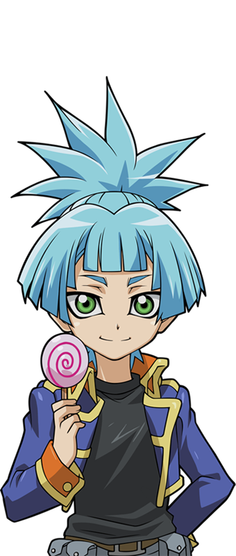
dans une carte, mais cet étranger est sorti de nulle part et l'a protégé.
n'arrivait pas à croire ce qui venait de se passer. Il était sur le point de sceller le traître Shiunin Sora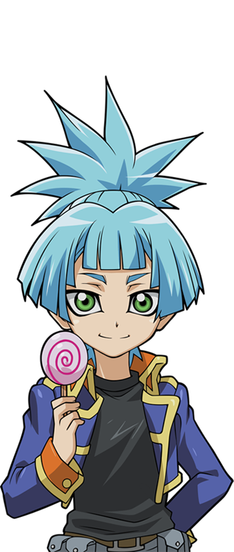
dans une carte, mais cet étranger est sorti de nulle part et l'a protégé.
Edo Phoenix
n'arrivait pas à croire ce qui venait de se passer. Il était sur le point de sceller le traître Shiunin Sora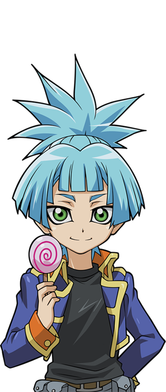
dans une carte, mais cet étranger est sorti de nulle part et l'a protégé.
Edo: D'où vient ce type !? Comment a-t-il fait pour protéger Sora d'être scellé dans une carte !? Et comment a-t-il fait pour ne pas être LUI-MÊME transformé en carte ?
Edo ne pouvait répondre à aucune de ces questions. Il était impossible d'empêcher quelqu'un d'être scellé une fois que le processus avait commencé. Ou plutôt, c'était censé être impossible.
Yuzu et Sora regardaient, abasourdis, l'apparition soudaine de
Yugi
et Sora regardaient, abasourdis, l'apparition soudaine de
Yugi .
Ils n'auraient jamais imaginé qu'il apparaisse au moment où ils avaient le plus besoin d'aide.
.
Ils n'auraient jamais imaginé qu'il apparaisse au moment où ils avaient le plus besoin d'aide.
Yuzu: D'abord Yugi est apparu pour sauver
Yuya , et maintenant il est là pour nous aider, Sora et moi. Comment a-t-il pu le savoir ?
, et maintenant il est là pour nous aider, Sora et moi. Comment a-t-il pu le savoir ?
S'est demandé Yuzu, complètement déconcertée. Sora eu des pensées similaires, se demandant comment il a pu empêcher Edo de le transformer en carte.
Yugi Muto , maintenant fusionné avec l'âme d'
Atem,
regarda le couple surpris qu'il venait d'aider.
, maintenant fusionné avec l'âme d'
Atem,
regarda le couple surpris qu'il venait d'aider.
Atem (Yami Yugi): Yuzu, Sora, vous allez bien ?
Demanda t-il. Même sa voix semblait plus forte et plus grave que la normale, les surprenant encore plus.
Yuzu: Je vais bien.
Yuzu disait d'une voix légèrement tremblante.
Sora: J'ai peut-être l'air un peu amoché, mais je vais me débrouiller.
Sora le disait, bien qu'il avait du mal à se relever. Yuzu s'est empressée de l'aider.
Sora: Merci de m'avoir sauvé, au fait.
Yugi lui souria.
Atem (Yami Yugi): Je t'en prie. C'est plutôt à moi te remercier d'avoir mis Yuzu à l'abri du danger. Maintenant...
Yugi le disait en recentrant son attention sur Edo.
Atem (Yami Yugi): Yuzu, occupes toi de Sora et restez en arrière. Je m'occupe de lui.
Bien que stupéfaite et confuse par son changement soudain de personalité, Yuzu acquiesca et se dirigea avec Sora vers une énorme caisse à côté de l'entrée de l'entrepôt. Edo a finalement retrouvé ses esprits à ce moment-là.
Edo: Qui est tu !? Identifie toi sur le champ !
Exigea ce dernier.
Atem (Yami Yugi): Je me nomme Muto Yugi, et je suis venu pour empêcher
Akaba Leo de prendre Hiragi Yuzu ! Ton combat est avec moi maintenant, Edo Phoenix !
de prendre Hiragi Yuzu ! Ton combat est avec moi maintenant, Edo Phoenix !
Yugi a déclaré avec force en activant son Duel Disk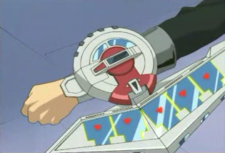. Le trio présent fut encore plus surpris.
Yuzu: Yugi est ici... pour me protéger ?
Se demanda t-elle ?
Sora: Quoi ? Comment a-t-il su pour le plan du Professeur ? Et d'ailleurs, comment se fait-il qu'il connaisse lui même le Professeur ?
Se demanda Sora dans son esprit. Edo était tout aussi choqué par la déclaration de Yugi.
Edo: Protéger Hiragi Yuzu ? Comment sais-tu seulement que... ?
Edo a alors réalisé quelque chose de choquant en haletant.
Edo: C'est toi ! Tu est le Duelliste dont on m'a parlé ! Tu est le vrai protecteur de Hiragi Yuzu, pas Sora !
S'exclame ce dernier. La seule réponse de Yugi fut un sourire confiant, ce qui rendit furieux le commandant en chef.
Sora: Il est le quoi ?
Sora n'a pas pu s'empêcher de demander à voix haute. Yuzu était tout aussi perplexe que lui.
Atem (Yami Yugi): C'est l'heure du duel, Edo ! Affronte-moi !
Yugi lanca son défi. Edo ricana et a également activé son disque de duel en réponse.
Edo: Les choses ne se sont peut-être pas passées comme prévu, mais je finirai par gagner ! Prépare-toi à être détruit, Muto Yugi !
Leur esprits de combat pouvait être ressentie par les deux combattants alors que leur combat épique commençait.
Edo: Je commence en premier. C'est mon tour !
Turn 1: (Atem (Yami Yugi): 4000 LP / Main: 5)(Edo: 4000 LP / Main: 5)
Edo: J'invoque “Destiny HERO Drillguy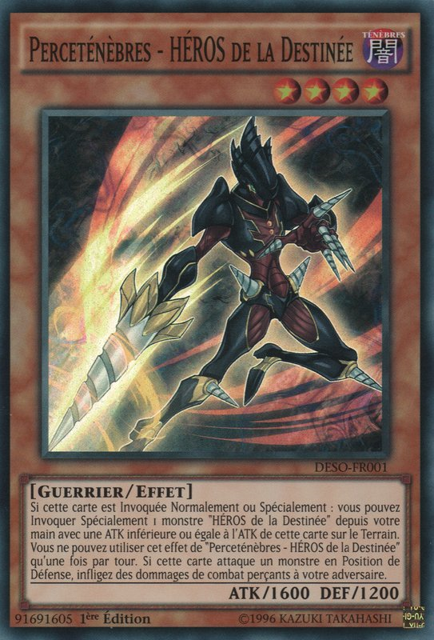 ”.
Une créature orange et noire couverte de forets se tient maintenant devant son ennemi.
Edo: Je pose 2 cartes face cachées et je termine mon tour.
Maintenant montre-moi pourquoi je devrais te prendre au sérieux !
Demanda Edo avec colère.
Atem (Yami Yugi): Comme tu le voudras. C'est mon tour. Draw !
Turn 2: (Atem (Yami Yugi): 4000 LP / Main: 6)(Edo: 4000 LP / Main: 2)
Yugi et Atem commencèrent à voir un moyen de battre leur adversaire... et peut-être de l'ébranler un peu. Mais d'abord, ils doivent gagner un peu de temps.
Atem (Yami Yugi): Tout d'abord, j'active la carte Magie
“Goyoku na Tsubo ”
. Cela me permet de piocher 2 cartes supplémentaires de mon deck.
”
. Cela me permet de piocher 2 cartes supplémentaires de mon deck.
Ensuite, je pose 5 cartes face cachées, et je termine mon tour.
Ce coup surprena tout le monde.
Yuzu: Il a seulement posé des cartes, mais n'a invoqué aucun monstres ?
Demanda Yuzu, déconcertée.
Sora: Mais enfin, qu'est ce qu'il fait ?
Se demanda Sora. Edo, lui ricana.
Edo: Aucun Monstre pour te protéger ? Quelle déception ! À mon tour ! Draw !
Turn 3: (Atem (Yami Yugi): 4000 LP / Main: 2)(Edo: 4000 LP / Main: 3)
Edo: J'active la carte Magie
“Yugo ”
afin de faire fusionner “Destiny HERO Drillguy ”
sur mon terrain avec “Destiny HERO Decisionguy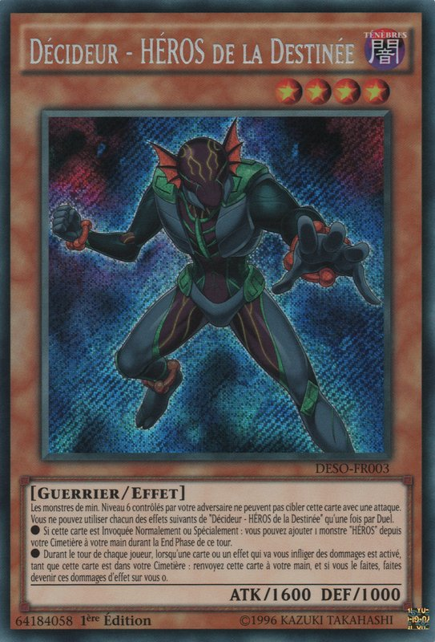 ”
se trouvant dans ma main. Héros décidant de l'issue d'un combat ! Héros transperçant les fondations du destin ! Ne faites plus qu'un et régnez sur cet avenir obscur !
Yugo Shokan ! Come on !
“Destiny HERO Dystopiaguy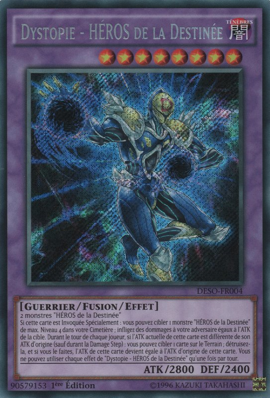 ” !
”
afin de faire fusionner “Destiny HERO Drillguy ”
sur mon terrain avec “Destiny HERO Decisionguy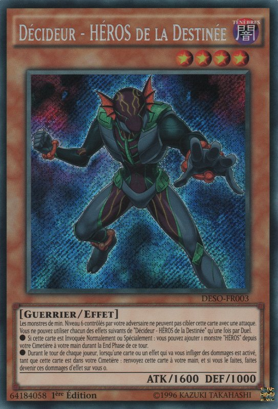 ”
se trouvant dans ma main. Héros décidant de l'issue d'un combat ! Héros transperçant les fondations du destin ! Ne faites plus qu'un et régnez sur cet avenir obscur !
Yugo Shokan ! Come on !
“Destiny HERO Dystopiaguy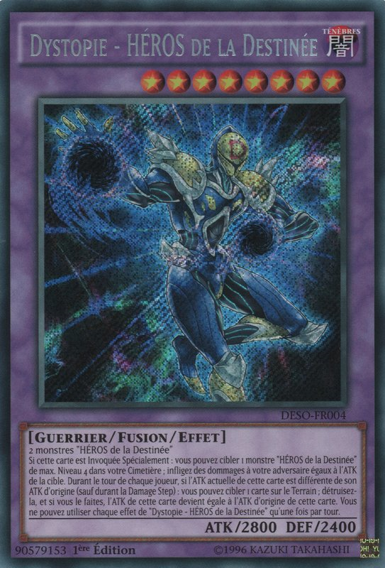 ” !
Le meilleur monstre d'Edo était un guerrier violet foncé portant un masque doré avec un grand "D" rouge dessus.
Yuzu: C'est son meilleur monstre ?
Demanda Yuzu.
Sora: Oui, et il est très brutal.
Sora répondit, rendant Yuzu encore plus inquiète pour Yugi.
Edo: J'active l'effet de “Dystopiaguy ” ! Lorsqu'il est invoqué par fusion, je peux t'infliger des dommages équivalents à l'Attaque de l'un de ses matériels de Fusion. La puissance d'Attaque de “Drillguy ” était de 1600 points. Ca sera donc ce montant que tu perdras en points de vie. Squeeze Palm !
Le poing de Dystopiaguy tira un puissant coup d'energie comprimé sur Yugi, espérant l'endommager. Mais...
Atem (Yami Yugi): Pas si vite ! J'active l'effet de
“Clear Kuriboh ”
se trouvant dans ma main. Lorsque mon adversaire utilise un effet de monstre pour endommager mes points de vie, je peux annuler cet effet en envoyant
“Clear Kuriboh ”
de ma main au cimetière. L'effet de
”
se trouvant dans ma main. Lorsque mon adversaire utilise un effet de monstre pour endommager mes points de vie, je peux annuler cet effet en envoyant
“Clear Kuriboh ”
de ma main au cimetière. L'effet de
“Dystopiaguy ”
est donc annulé grâce à mon ami à fourrure.
Une mignonne créature pelucheuse violette intercepta le poing de Dystopiaguy et le repoussa. Edo maudit pour ce contretemps.
Edo: Bon sang ! Il avait une carte comme ça dans sa main !?
Disait-il avec frustration.
Yuzu: C'était juste.
Commenta Yuzu, avec Sora hochant la tête, en accord avec elle.
Atem (Yami Yugi): Désolé Edo, mais tu vas devoir faire mieux que ça !
Disait Yugi le disait avec confiance, ce qui fit grogner Edo.
Edo: Ne fais pas le malin ! “Dystopiaguy ” , attaque directe ! Dystopia Blow !
Yuzu et Sora regardèrent le monstre d'Edo s'avancer pour frapper Yugi. Mais ça n'a pas vraiment marché non plus.
Atem (Yami Yugi): J'active l' autre effet de
“Clear Kuriboh ”
! Lorsqu'un monstre de mon adversaire est sur le point de m'attaquer directement, je peux bannir
“Clear Kuriboh ”
de mon Cimetière pour piocher 1 carte de mon Deck ! Si c'est un Monstre, je peux l'invoquer spécialement sur mon Terrain et faire en sorte que ton Monstre
l'attaque à la place ! Maintenant, je pioche !
Yugi piocha alors sa carte, et souria.
Atem (Yami Yugi): J'ai pioché un Monstre appelé
“Bafometto ”
. Je fais maintenant l'invocation spécial de
“Bafometto ”
sur mon terrain pour me
”
. Je fais maintenant l'invocation spécial de
“Bafometto ”
sur mon terrain pour me
défendre.
Le Monstre en Mode Attaque que Yugi a sorti ressemblait à un démon à la peau brune avec quatre bras, deux cornes sur la tête et une paire d'ailes. Edo grommela à nouveau bruyamment.
Edo: Nggh, très bien, dans ce cas,
“Dystopiaguy ”
, attaque “Bafometto ”
! Reduis-le en miette !
Cria ce dernier. Yugi et Atem ont tous deux souri. Ils attendaient ce moment avec impatience.
Atem (Yami Yugi): Tu est tombé droit dans mon piège. Je retourne une carte face cachée...
“Magical Silk Hats ”
!
”
!
Juste à ce moment, 4 chapeaux noirs en haut de forme avec des points d'interrogation dessus ont couvert le champ de Yugi, y compris son Monstre.
Atem (Yami Yugi): Maintenant, tu dois choisir sous quel chapeau mon Monstre se cache ! Attention, ces chapeaux ne cachent pas que mon
“Bafometto ”.
Yugi a prévenu tout en continuant à sourire.
Edo a été choqué. Ce choc a rapidement été remplacé par une colère intense.
Edo: Cette carte ! Elle ressemble à celle qu'il a utilisée !
Il se souvenait d'une scène de son passé récent lors d'un duel avec un homme qui utilisait un piège similaire à celui de Yugi. Cet homme était la raison pour laquelle il était si réticent à quitter la Dimension Xyz. Si ce n'était pas un ordre direct du professeur lui-même, Edo ne serait pas ici à s'occuper d'une fille dont il ne voyait pas l'importance pour l'Arc Area Project. Il n'arrivait pas à croire que quelqu'un ait eu le culot de jouer une carte comme la sienne ! Yuzu était tout aussi surprise, mais contrairement à Edo, elle n'avait aucune rancune envers l'homme qu'elle connaissait.
Yuzu: Des chapeaux magiques ? Se pourrait-il que ?
S'est demandée Yuzu avec étonnement. Edo, cependant, ne pouvait contenir sa fureur.
Edo: Pourquoi as-tu cette carte ? Es-tu un allié de Sakaki Yusho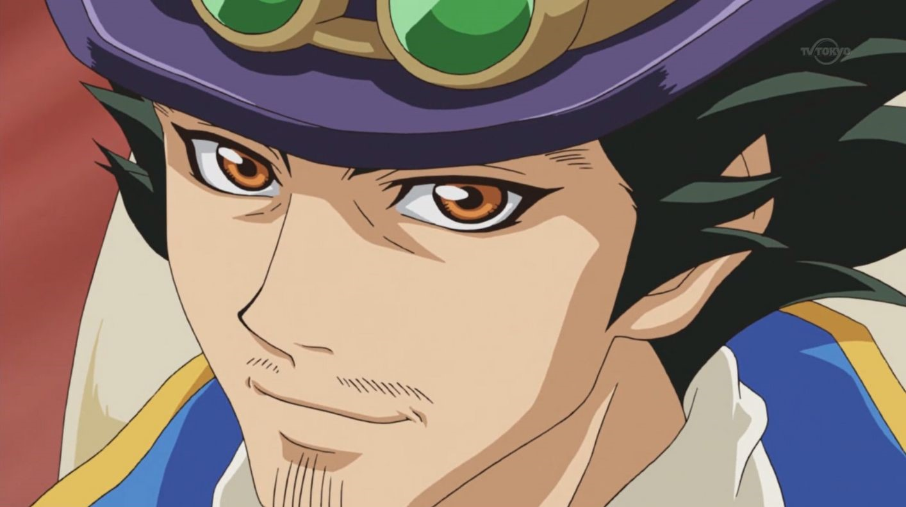 ?
Edo a demandé furieusement. Yuzu haleta bruyamment et s'est couvert la bouche.
Yuzu: Est ce qu'il vient de dire Sakaki Yusho ? Edo connaît le père de Yuya !?
Elle s'interrogea, choquée par cette révélation. Personne n'avait vu le père disparu de Yuya pendant trois années entières. Yuzu se demandait si Edo savait où il se trouvait.
Sora: Sakaki ?
Sora a demandé, surpis d'entendre qu'Edo connaissait quelqu'un avec le même nom de famille que Yuya.
Atem (Yami Yugi): Je n'ai pas eu le plaisir de le rencontrer. Cependant, je dois avouer que j'admire beaucoup son travail.
Yugi a répondu, mettant Edo encore plus en colère.
Edo: Toi ? Un admirateur !? Eh bien, il sera extrèmement déçu d'apprendre que je t'aurais écrasé dans ce duel ! “Dystopiaguy ” , attaque le chapeau à l'extrême droite !
Edo ordonna à son monstre. Dystopiaguy donna un coup de poing au chapeau, mais ne trouva pas le monstre de Yugi, mais une mauvaise surprise en dessous.
Atem (Yami Yugi): Mauvais chapeau ! Tu as déclenché ma carte Piège
“Magic Cylinder ”
!
”
!
Ton attaque est maintenant annulée et des dégâts équivalents aux points d'attaque de ton monstre te seront infligés !
Déclara Yugi alors que son piège se dirigeait vers Edo.
Edo: Tu rêves ! J'active l'effet de “Destiny HERO Decisionguy ” se trouvant dans mon cimetière ! Lorsque mon adversaire utilise un Effet qui endommagerait mes Points de Vie pendant le tour où “Decisionguy ” a été envoyé au cimetière, je peux le reprendre dans ma main pour annuler les dommages !
Une ombre du Monstre d'Edo est brièvement apparue pour bloquer les dégâts que le Piège de Yugi aurait pu infliger.
Atem (Yami Yugi): Bien joué.
Yugi répondit, impressionné.
Edo: En fait, je voulais invoquer “Dystopiaguy ” plus tôt pour t'infliger des dégâts le plus rapidement possible, mais je ne voulais pas gâcher une occasion de me protéger si une situation comme celle-ci se présentait. Je suis peut-être énervé, mais je ne suis pas stupide, ni insouciant Yugi !
Atem (Yami Yugi): Heureux d'entendre cela. Mais ce duel est encore loin d'être terminé.
Edo: Il le sera bientôt pour toi ! J'active une carte Magie
“Destiny Draw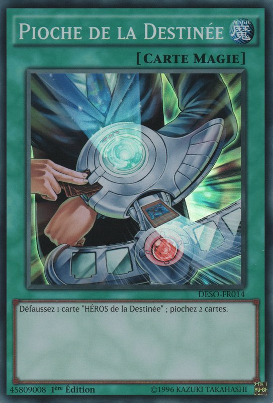 ”
. Elle me permet de piocher 2 cartes en me défaussant d'un monstre
Destiny HERO.
Je renvoie “Decisionguy ”
au cimetière afin de pouvoir piocher 2 cartes. Maintenant, j'active une Magie Continue,
“D Death Match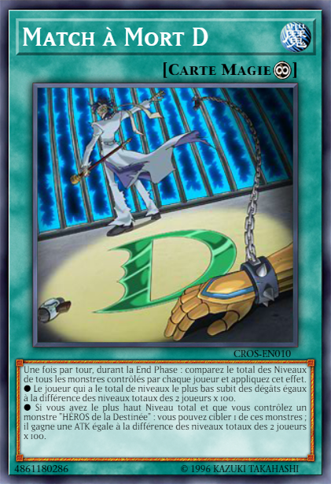 ”.
Cette carte me permettra non seulement de t'infliger des dégâts, mais aussi de me débarrasser de ton maudit Piège à Chapeaux et de rendre mon Monstre
plus fort !
D'abord, une fois par tour, pendant la End Phase... !
Mais avant qu'Edo ne puisse expliquer l'effet de sa carte magique, Yugi a sorti une autre surprise pour son adversaire.
Atem (Yami Yugi): Cela ne te servira à rien ! J'active un autre Piège,
“Magic Jammer ”
. En envoyant la dernière carte que j'ai en main au cimetière, ta carte magie est annulé et elle est détruite !
”
. En envoyant la dernière carte que j'ai en main au cimetière, ta carte magie est annulé et elle est détruite !
Edo: Espèce de...
Edo cria, furieux que Yugi se soit montrer plus malin que lui encore une fois.
Edo: Tchh ! Je termine mon tour !
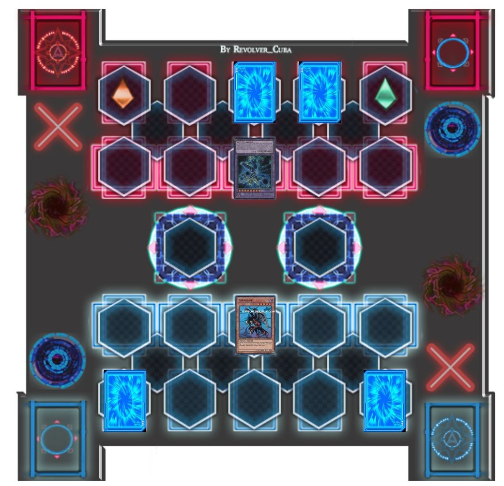Edo déclara à contrecoeur. Yuzu et Sora étaient tous deux impressionnés par les compétences de Yugi en duel.
Yuzu: Yugi est doué.
Disait Yuzu avec étonnement. Elle aurait aimé que Yuya soit là pour voir ça.
Sora: Oui, vraiment doué. Mais est-ce qu'il va vraiment gagner ?
Sora a demandé, toujours pas certain que Yugi puisse battre le commandant en chef d'Academia. En effet, bien que Yugi semble être préparé à tout ce qu'Edo peut lui envoyer, il n'a toujours pas invoqué de Monstre assez fort pour vaincre “Dystopiaguy ”. De plus, il n'avait plus de cartes en main. S'il ne piochait pas quelque chose de bon à son prochain tour, cela pourrait être la fin pour lui. Yugi et Atem pensaient eux aussi la même chose.
Yugi: Mou Hitori no Boku, nous devons piochez la carte dont nous avons besoin pour gagner le duel maintenant !
Yugi le disait à son ami, à l'interieur de ses pensées.
Atem (Yami Yugi): En effet, nous devons le faire. Nous devons vaincre Edo pour garder Yuzu et Sora en sécurité. C'est le moment d'agir ! Répondez moi,
mon deck !
Le Pharaon répondit alors qu'il était sur le point de piochez.
Atem (Yami Yugi): C'est mon tour. Draw !
Il regarda pour voir ce qu'il avait tiré, et eut de l'espoir.
Atem (Yami Yugi): J'active une carte magie,
“Ten yori no Hosatsu ”
! Cela nous permet à tous les 2 de piocher des cartes jusqu'à avoir 6 cartes en main.
”
! Cela nous permet à tous les 2 de piocher des cartes jusqu'à avoir 6 cartes en main.
Après qu'Edo et lui aient tiré leurs 6 cartes, Yugi et Atem se sont souri l'un l'autre et ont hoché la tête à l'unisson. Il était temps de vaincre Edo.
Atem (Yami Yugi): Maintenant, j'active une Magie de Jeu Rapide,
“Yugo Kaijo ”
!
”
!
Cela me permet de renvoyer ton monstre Fusion dans ton Extra Deck et de le remplacer par les monstres que tu as utilisés pour l'invoquer !
Edo regarda ces monstres Destiny HERO, “Drillguy ” ainsi que “Decisionguy ” réapparaître sur son Terrain. “Decisionguy ” qui ressemblait à une créature marine humanoïde dans un costume vert foncé et gris, se tenait debout avec son compagnon monstre.
Cette fois, Edo ne semblait pas si perturbé.
Edo: J'ai pensé que tu pourrais essayer de faire quelque chose comme ça. Carte Piège activé !
“D Fusion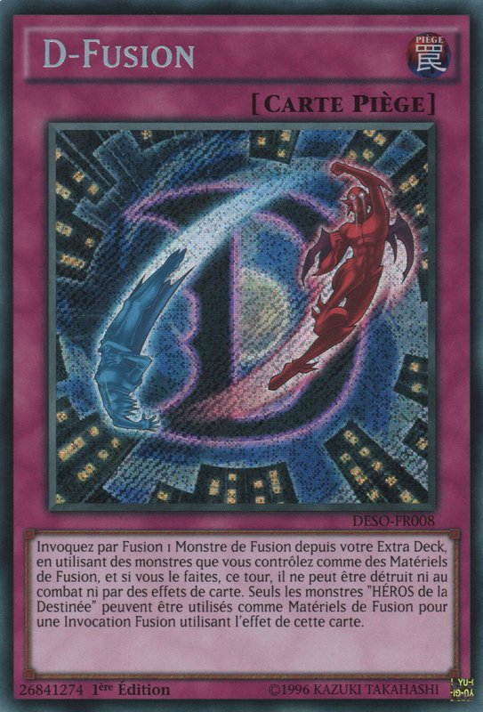 ”
! Cela me permet d'invoquer un Monstre Fusion en utilisant les Monstres que je contrôle ! Je fais fusionner
“Drillguy ”
et “Decisionguy ”
pour invoquer une nouvelle fois
“Dystopiaguy ”
!
Non seulement “Dystopiaguy ”
est de retour, mais en plus, “D Fusion ”
le protège également d'être détruit au combat, ou par des effets de cartes.
Et comme la dernière fois, j'active l'effet de
“Dystopiaguy ”
afin de t'infliger des dégâts. Squeeze Palm !
“Dystopiaguy ” serra une fois de plus son poing, et envoya une explosion pour endommager Yugi. Cette fois ci, cependant, il semblait avoir réussi car Yugi a été touché et a été recouvert de fumée.
Yuzu: Yugi !
Yuzu cria d'inquiétude. Sora fixait le nuage de fumée, attendant de voir l'état de Yugi.
Edo: Finalement, je t'ai eu !
Disait Edo, l'air un peu suffisant, maintenant qu'il a enfin atteint les points de vie de Yugi.
Atem (Yami Yugi): Pas autant que tu ne le penses !
Yugi le fit remarquer, alors que la fumée se dissipait, révélant qu'il n'était pas trop blessé comme Edo et Sora le pensaient. De plus, ses points de vie n'ont pas beaucoup diminué non plus.
(Atem (Yami Yugi): 3400 LP)
Edo: Quoi ? Ses points de vie n'ont subi que 600 points de dégâts ! Il aurait dû en prendre plus que ça !
Cria Edo, ce dernier surpris.
Atem (Yami Yugi): Avant que l'effet de ton monstre ne m'atteigne, j'ai activé cette carte magie.
“Hijoshoku ”
. Cette Magie de jeu-rapide a permis d'augmenter mes points de vie de 1000 pour chaque carte Magie et Piège que j'ai envoyée au Cimetière autre que cette carte.
”
. Cette Magie de jeu-rapide a permis d'augmenter mes points de vie de 1000 pour chaque carte Magie et Piège que j'ai envoyée au Cimetière autre que cette carte.
J'ai envoyé ma carte dernière carte face cachée au Cimetière pour augmenter mes Points de Vie à 5000, puis j'en ai perdu 1600 à cause de l'effet de
“Dystopiaguy ”
.
(Atem (Yami Yugi): 4000 LP + 1000 LP - 1600 LP = 3400 LP)
Yuzu: Incroyable. Yugi s'en est encore sortit.
Disait Yuzu, de plus en plus impréssioné par les tactiques de Yugi.
Sora: En effet. C'est comme si il avait toujours une longueur d'avance dans la stratégie de Edo.
Répondit Sora.
Le poing de Edo trembla de rage.
Edo: Tu me tapes vraiment sur les nerfs, Yugi ! Tous ces tours de passe-passe que tu viens de jouer! Et pourtant, tu n'as rien qui puisse battre désormais mon indestructible “Dystopiaguy ” ! Tout ce que tu as fait, c'est seulement de prolonger ta propre défaite ! Tu ne peux pas gagner ce duel !
Edo a déclaré à Yugi. Cependant, ce dernier restait confiant.
Atem (Yami Yugi): Tu as tort Edo. Je PEUX gagner, et je le ferai ! Car j'ai maintenant tout ce qu'il me faut pour me débarrasser sur le champ de ton monstre et te terrasser durant ce tour !
Yugi déclara avec audace en pointant du doigt Edo, ce dernier peu convaincu.
Edo: Tu bluffes ! Tu ne peux pas détruire mon monstre grâce à ma carte Piège ! Tu ne peux rien faire !
Atem (Yami Yugi): Permets moi de te prouver le contraire. D'abord, je sacrifie
“Bafometto ”
afin de faire l'invocation avancée de cette carte. Viens
“Black Magician Girl ”
!
”
!
Une jolie fille blonde dans une tenue de Magicien bleue, brandissant un bâton, est apparue sur le Terrain à la place de Berfomet.
Sora: Oh, je l'aime bien !
Disait Sora en regardant le nouveau monstre de Yugi avec joie.
Yuzu: Oui. Moi aussi. Elle est si jolie.
Yuzu répondit, admirant le look de la nouvelle magicienne.
Edo: Je ne suis pas impressionnée. Elle a une puissance d'attaque bien inférieure à celle de mon Monstre !
Fit remarquer Edo en criant.
Atem (Yami Yugi): Je ne fais que commencer. Maintenant, je peux enfin invoquer le monstre qui me permettra de nettoyer ton terrain ! Pour que je puisse faire
l'Invocation Spéciale de cette puissante créature, je dois bannir un monstre d'attribut LUMIERE et un Monstre d'attribut TENEBRES de mon Cimetière !
Répondit Yugi. A ce moment, Edo l'interrompit de nouveau.
Edo: Mais tu n'as aucun monstre LUMIERE dans ton cimetière !
“Clear Kuriboh ”
était le seul que tu avais, et tu l'as banni plus tôt !
Yugi lui adressa un sourire en coin.
Atem (Yami Yugi): Tu as encore faux Edo. J'en ai envoyé un autre dans mon cimetière, il n'y a pas si longtemps.
Yugi le faisait remarquer à Edo.
Edo: Depuis quand ? Attends... !
Edo a alors compris où Yugi voulait en venir. Avant qu'Edo ne termine son tour précédent, sa carte “D Death Match ” avait été annulée et détruite par le Piège de Yugi. Un Piège qui nécessitait l'envoi d'une carte de la main de son adversaire au Cimetière...
Edo:Ne me dis pas que !
Ce dernier haleta.
Atem (Yami Yugi): Tu as raison. La carte que je me suis défaussé pour activer
“Magic Jammer ”
était un monstre d'attribut LUMIERE appelé
“Watapon ”
. Maintenant, je le bannis avec mon “Bafometto ”
afin de l'invocation Spéciale de ce monstre !
”
. Maintenant, je le bannis avec mon “Bafometto ”
afin de l'invocation Spéciale de ce monstre !
Lorsque les forces de la lumière et des ténèbres s'entremêlent ! La porte du chaos s'ouvrira ! Descends sur Terre, le guerrier légendaire,
“Chaos Soldier Kaibyaku no Shisha ”
!
”
!
Le monstre Soldat de Yugi était un grand homme portant une armure bleu foncé et or, une épée dans une main et un bouclier dans l'autre.
Yuzu et Sora: Cool !
Yuzu et Sora se sont exclamés avec enthousiasme. Même Edo était un peu intimidé par le nouveau Monstre que Yugi venait d'invoquer.
Edo: Et alors ? Même si ton Monstre est plus fort que le mien, il ne peut pas détruire “Dystopiaguy ” au combat ! Et tous les effets de destruction de cartes qu'il peut avoir ne fonctionneront pas non plus ! C'est toujours inutile !
Edo répéta toujours. Yugi, sourit et émit un petit rire.
Edo: Qu'y a t-il de si drôle !?
Atem (Yami Yugi): Edo, tout au long de ce Duel, je n'ai pas dit une seule fois que je prévoyais de " détruire " ton Monstre. Ce n'était qu'une supposition de ta
part, et une mauvaise en plus. Car vois-tu... ton monstre Destiny HERO n'était pas du tout "destiné" à être détruit. Son destin est entièrement différent.
Yugi lui répondit, rendant Edo nerveux à ce stade.
Edo: De quoi parles tu ?
Le disait-il d'une voix tremblante.
Atem (Yami Yugi): De ceci ! J'active l'effet de
“Chaos Soldier ”
! Une fois par tour, je peux bannir un monstre du Terrain que mon adversaire contrôle ! Ton monstre
“Destiny HERO Dystopiaguy ”
va à présent disparaître !
Edo: NON !
Edo s'écria, regardant impuissant son monstre disparaître de sa vue. Yuzu et Sora étaient stupéfaits.
Sora: Yugi a réussi ! Le monstre d'Edo ne le protège plus ! Yugi peut l'attaquer maintenant !
Disait Sora. Yuzu hocha la tête en signe d'accord.
Atem (Yami Yugi): Ta carte
“D Fusion ”
protégeait peut-être ton monstre de la destruction, mais elle ne le protégeait pas d'être banni. Cependant, en raison de l'utilisation de son effet,
“Chaos Soldier ”
ne peut pas attaquer ce tour-ci. C'est pourquoi, avec “Dystopiaguy ”
qui est partit, je peux enfin sortir mon Monstre préféré pour qu'il m'aide à mettre fin à ce Duel !
Yuzu, Sora et Edo: Ton préféré ?
Tout le monde a demandé.
Atem (Yami Yugi): Lorsque je contrôle
“Black Magician Girl ”
sur mon terrain, je peux activer une carte Magie appelée
“Kenja no Hoseki ”
.
”
.
Cela me permet de faire l'Invocation Spéciale du monstre le plus loyal, et le plus proche de mon coeur depuis mon Deck ! Apparais...
“Black Magician "
!
"
!
Un homme vêtu d'une tenue violette et tenant un sceptre se tenait maintenant à côté de sa disciple Magicienne.
Yuzu: Alors, c'est donc lui, le meilleur monstre de Yugi ? Je me demande pourquoi cette carte est t-elle si importante pour lui...
Se demanda Yuzu, curieuse à son sujet.
Edo se tenait là, n'arrivant pas à croire ce qui se passait.
Edo: Maudit soit-il ! Il possède maintenant 2 monstres invoqués spécialement maintenant, mais avec
“Dystopiaguy ”
qui est banni, je ne peux pas utiliser mon piège
“D Hyper Nova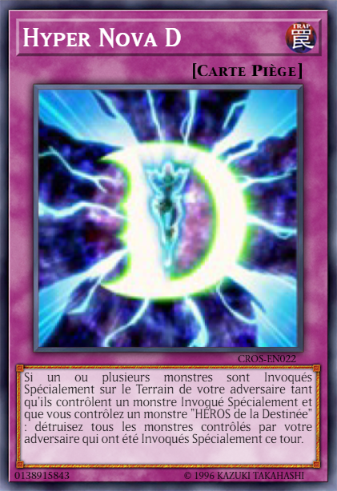 ”
! Son “Bafometto ”
était invoqué spécialement, mais il n'était pas une menace pour moi. Je n'avais aucune intention d'utiliser mon piège sur son monstre. Et il a remplacé
pour invoquer par sacrifice sa
“Black Magician Girl ”
. Si j'avais encore mon monstre Destiny HERO sur le terrain.
“D Hyper Nova ”
aurait pû détruire tous ses monstres invoqués spécialement ce tour-ci. Maintenant, il... il m'a eu !
Réalisa Edo avec horreur.
Edo: Tu avais planifié toute cette stratégie depuis le début, pas vrai !
Edo hurla de colère. Yugi sourit davantage, l'exaspérant encore plus.
Atem (Yami Yugi): J'aime planifier les choses à l'avance. Maintenant mes Magiciens, attaquez Edo Phoenix directement !
Black Magic !
Black Burning !
Ensemble, “Black Magician "
et “Black Magician Girl ”
ont tiré des rayons d'énergie violets de leurs armes directement sur Edo, le battant d'un seul coup. Edo est tombé à genoux à cause de l'attaque combinée.
(Edo: 4000 LP - 2500 LP - 2000 LP = 0 LP)
Yuzu: Yugi a gagné !
Yuzu cria de joie.
Sora: Mec, c'est vraiment un pro.
Sora le disait, impressionné par les compétences en duel de Yugi.
Alors qu'il s'agenouillait et fixait le sol, Edo serra les dents, ne croyant toujours pas avoir perdu contre un inconnu. Il était l'un des meilleurs éléments d'Académie, et pourtant cela continuait à lui arriver. D'abord Sakaki Yusho, et maintenant ce type. Il s'est battu et a perdu contre les deux.
Edo: Pourquoi... Pourquoi je continue à perdre contre des types comme toi ?
Demanda-t-il, bouillonnant de colère.
Atem (Yami Yugi): Parce que tu te bats dans le mauvais camp. Ca, ainsi que pour toutes les mauvaises raisons de ce camp. Certaines que toi même, tu ne comprends même pas.
Dit Yugi à son adversaire vaincu. Edo s'est alors remis sur ses pieds et l'a regardé fixement, un air défiant.
Edo: Quoi ? Qu'est-ce que je ne comprends pas ?
Atem (Yami Yugi): Pour commencer, les raisons pour lesquelles vous avez attaqué la Dimension Xyz. Les gens là-bas étaient innocents et vivaient leur vie en paix, jusqu'à ce que Akaba Leo
envoie ses soldats pour tout leur prendre, avec toi à la tête. Tu penses que tout ce que fait Academia est noble et a un grand but, mais cela ne pourrait pas être plus éloigné de la vérité !
Ce que Leo a fait, c'est commettre une atrocité ! Il n'y a rien de "noble" à voler la vie des gens et à détruire ce qu'ils ont de plus cher !
Yugi lui répondit, sa propre colère se manifestant.
Yuzu: Attaquer !? Voler des vies !? Sora, de quoi est ce que Yugi parle-t-il !?
Une Yuzu choquée demanda à son ami, qui détourna le regard sans dire un mot. Cela la rendait encore plus confuse. La fureur d'Edo ne s'était toujours pas calmée.
Edo: Tu parles exactement comme lui ! Yusho Sakaki a essayé de me débiter de telles bêtises ! Mais il...
Yuzu: Hé ! Comment connais-tu Sakaki Yusho ? Où est-il ? !
Demanda Yuzu, ce qui a surpris Edo.
Edo: Tu le connais aussi ?
Demanda Edo, de la curiosité se mêlant maintenant à sa colère.
Yuzu: Il vivait ici, mais il a disparu il y a trois ans ! Personne ne sait où il est maintenant ! Et toi.
Demanda Yuzu, espérant qu'Edo aurait une réponse. Malheureusement, ce n'était pas le cas.
Edo: J'ai combattu Yusho il n'y a pas longtemps, mais après avoir perdu contre lui, il a en quelque sorte disparu sur place. J'ai essayé de le retrouver depuis, voulant lui prouver que les enseignements du Professeur sont le bon chemin vers la paix ! Sourire à travers Duels est tout simplement ridicule !
Yuzu: Ce n'est pas vrai !
Rétorqua Yuzu, en colère et triste de ne toujours pas savoir où était le père de Yuya, ni ce qu'il était devenu.
Yuzu: D'après ce que je viens d'entendre de Yugi, ce professeur à l'air d'être un vrai monstre !
Edo: Assez ! J'ai mes ordres, et je ne m'en détournerai pas maintenant !
Il a ensuite appuyé sur un bouton au-dessus de son Duel Disk. Instantanément, plus de deux douzaines de soldats de
l'Obelisk Force se sont matérialisés autour de Yugi, Yuzu et Sora. Ils étaient encerclés !
se sont matérialisés autour de Yugi, Yuzu et Sora. Ils étaient encerclés !
Sora: Qu'est ce que !?
Cria Sora de surprise.
Edo: Le professeur m'a confié tous ces gens comme renforts, au cas où le plan aurait échoué ! Il voulait s'assurer que Yuzu ne s'échapperait pas avant que Yuri ne vienne la chercher. Ce qui me rappelle...
Il appuya ensuite sur un autre bouton.
Edo: Je viens juste d'envoyer à Yuri le signal afin de venir ici. Il arrivera bientôt pour t'emmener à Académia, Hiragi Yuzu.
Atem (Yami Yugi): Jamais !
Yugi cria d'un air de défi.
Edo: Après tout ça, tu utilises encore d'autres personnes pour qu'il fasses des choses pour toi !? Espèce de lâche !
Yuzu le qualifia de nouveau. Edo retorqua.
Edo: Je te l'ai déjà dit, je ne fais que suivre les ordres du Professeur !
Yuzu: Cela ne justifie en rien tes actions !
Protesta cette dernière.
Edo: Ca suffit ! Obelisk Force, occupez-vous de Muto Yugi et de Shiunin Sora! Ne laissez pas Hiragi Yuzu s'échapper, mais ne lui faites pas de mal !
Edo ordonna alors que l'Obelisk Force s'avançait pour abattre leur proie. Malheureusement pour l'Obelisk Force...
Edo, Yuzu et Sora ont été surpris de voir que trois Monstres qu'ils n'avaient jamais vus auparavant, apparaître devant eux, et de manière synchrone, ils ont attaqué tous les soldats de l'Obelisk Force se trouvant dans la zone. Yugi et Atem sourièrent, en signe de triomphe.
Obelisk Force : Quoi !?
L'un d'eux cria avant que lui et ses camarades ne soient tous battus par
“Elemental HERO Neos ".
Plusieurs autres ont été touchés par une explosion d'énergie étincelante, tiré de la bouche de
“Stardust Dragon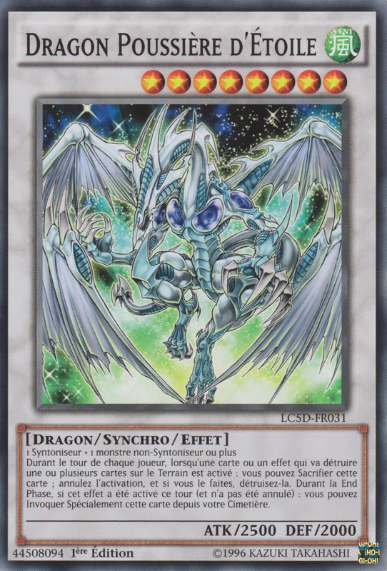 ”.
Tous les soldats restants ont été tailladés par les lames de
“Number 39: Kibo O Hope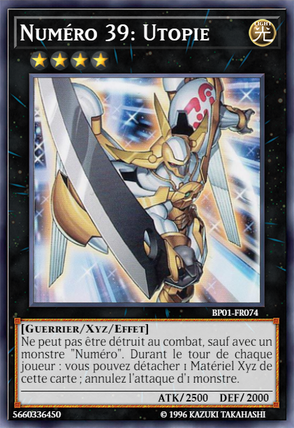 ”.
En quelques secondes, tout l'Obelisk Force était anéantie, et a automatiquement disparu dans des étincelles bleues, les renvoyant à Academia. Le trio de monstres
avait disparu à ce moment-là. Edo était plus abasourdi que jamais.
".
Plusieurs autres ont été touchés par une explosion d'énergie étincelante, tiré de la bouche de
“Stardust Dragon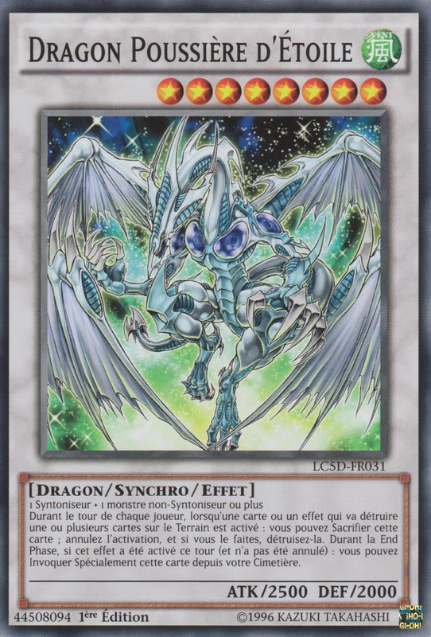 ”.
Tous les soldats restants ont été tailladés par les lames de
“Number 39: Kibo O Hope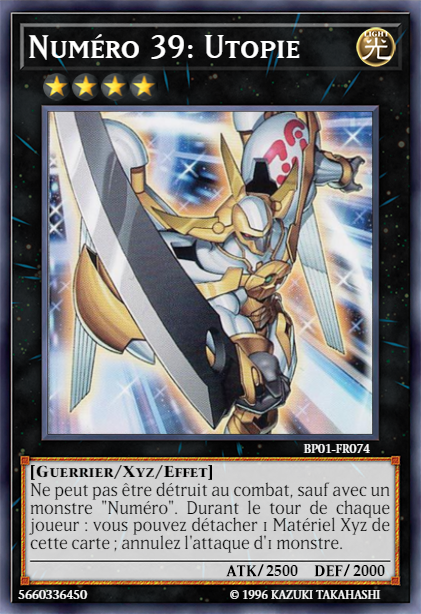 ”.
En quelques secondes, tout l'Obelisk Force était anéantie, et a automatiquement disparu dans des étincelles bleues, les renvoyant à Academia. Le trio de monstres
avait disparu à ce moment-là. Edo était plus abasourdi que jamais.
Judai: Oï ! Yugi-san ! Est ce qu'on est en retard à cette fête ?
Yugi se tourna pour voir Yuki Judai ,
Fudo Yusei
,
Fudo Yusei et
Tsukumo Yuma
et
Tsukumo Yuma le rejoindre, souriants.
Yugi leurs sourient également, tout en levant le pouce.
le rejoindre, souriants.
Yugi leurs sourient également, tout en levant le pouce.
Atem (Yami Yugi): A vrai dire, votre timing était plus que parfait. Merci !
Le trio hocha la tête en retour, heureux d'être arrivé à temps.
Atem (Yami Yugi): Les autres sont-ils en sécurité ?
Il a demandé. Le trio savait de qui il parlait.
Yuma: Ils sont tous les deux sains et saufs !
Annonça fièrement Yuma.
Yusei: Pareil pour eux.
Ajouta Yusei.
Judai: Elle est aussi en sécurité.
Judai lui répondit, également avec un pouce en l'air.
Sora: Qui sont ces types ?
Sora a demandé, toujours abasourdi.
Yuzu: Yugi semble les connaître. Ce doit être des amis à lui.
Yuzu a deviné, à en juger par la façon dont ils interagissaient.
Edo: Qu'est-ce que ça veut dire !?
Cria Edo d'indignation. Yugi s'est retourné vers lui et, ce faisant, il souleva son Duel Disk pour pointer vers son centre.
Atem (Yami Yugi): Comme je te l'ai déjà dit, j'aime plannifier les choses à l'avance. En venant ici pour vous affronter et protéger Yuzu, j'ai envoyé un signal de détresse à mes amis ici présents pour qu'ils puissent me donner un coup de main ! Je me doutais que Akaba Leo aurait un plan qui implique d'utiliser l'Obelisk Force afin de te donner un avantage injuste. Alors..., je voulais avoir ma propre équipe pour faire face à la tienne.
Edo a été choqué que Yugi ait réellement pensé aussi loin que ça dans le futur. Pour le prouver, ses amis ont montré leurs propres Duel Disks, chacun ayant une lumière rouge clignotante au centre. Edo jura dans sa barbe à cela.
Yuzu: Votre professeur est vraiment un monstre sans cœur, n'est-ce pas !?
Yuzu a répondu en hurlant.
Edo: Tu n'en sais rien !
Edo a protesté, mais Yugi l'interrompit, et repris la parole.
Atem (Yami Yugi): Au contraire Edo. Je sais tout. Je connais même la raison pour laquelle Leo veut tellement capturer Yuzu ! Une raison qu'il n'a partagée avec personne d'autre !
Cela a attiré l'attention de tout le monde.
Sora: Il sait pourquoi le Professeur en a après Yuzu ?
Demanda doucement Sora. Yuzu a sursauté en entendant cela aussi.
Edo: Quelle raison ?
Demanda Edo à contrecœur. Malgré sa colère et sa frustration, il restait curieux de savoir pourquoi cette fille était-elle si importante pour le Professeur. Si Yugi savait, peut-être qu'il pourrait le découvrir. La réponse que Yugi s'apprêtait à donner laissèrent Edo, Sora et Yuzu sous un choc horrifié.
Atem (Yami Yugi): Akaba Leo a perdu quelqu'un de très important pour lui, et il prévoyait d'utiliser Yuzu pour ramener cette personne. Cependant, la méthode qu'il comptait employer coûtera à la vie de Yuzu ! Je suis ici pour m'assurer que cela n'arrive jamais !
Yuzu commenca à pâlir, et son corps à trembler. Ce professeur, Akaba Leo, a l'intention de la tuer !? Juste pour pouvoir ressusciter quelqu'un qu'il a perdu !? Elle avait presque envie de vomir. La mâchoire de Sora s'était décrochée et il fixait Yuzu avec une inquiétude et une panique renouvelées. Les yeux d'Edo s'élargirent avec incrédulité.
Edo: Cela... ne peut pas être vrai. C'est juste un autre de tes mensonges !
Disait Edo avec entêtement. Il n'aurait jamais pu imaginer que le Professeur fasse une chose pareille.
Atem (Yami Yugi): Tout ce que je t'ai dit était la vérité. Tu as juste besoin de l'accepter et de voir à travers le mal des actions de Leo Akaba.
Disait Yugi. À ce stade, ses alliés se sont avancés à côté de lui.
Judai: C'est vrai. Il a raison. En fait, je connais quelqu'un d'où je viens qui lui aussi, a été induit en erreur, tout comme toi. Il a vu à quel point il s'était
trompé. Je sais que tu peux aussi ouvrir les yeux.
Judai lui disait, en pensant à l'Edo Phoenix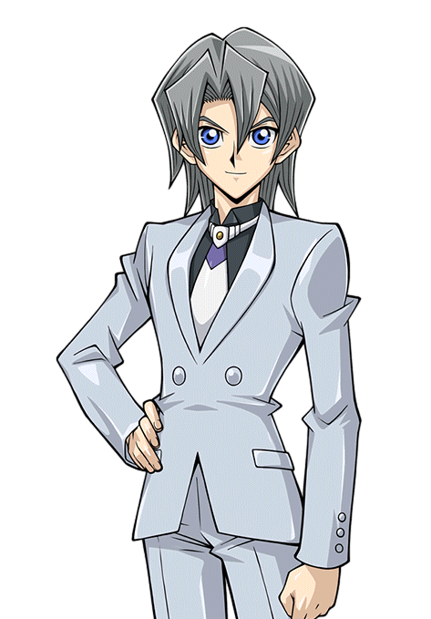
de son monde.
Yusei: Il n'est pas encore trop tard pour toi. Tu peux encore faire ce qui est juste.
Persista Yusei.
Yuma: Totalement ! Il n'y a rien de mal à utiliser les duels pour faire sourire les gens et les rendre heureux ! Yusho aurait voulu cela aussi. C'est ce qu'il
voulait pour tous ceux à qui il a enseigné, y compris une certaine personne que j'ai rencontrée récemment.
Disait Yuma avec Dennis en tête.
Edo semblait plus en conflit que jamais. Au fond de lui, il se battait entre ce qu'il avait appris du Professeur et ce que Sakaki Yusho essayait de lui enseigner. Et maintenant, Yugi et ses amis ont fait d'avantage pencher la balance vers ce dernier. En outre, ce qu'il a entendu sur le désir du Professeur de capturer Yuzu a jeté un doute sur ses objectifs. Il ne savait plus quoi faire.
Vaincu et confus, Edo a appuyé sur un autre bouton de son Duel Disk et a disparu comme l'a fait l'Obelisk Force. Il avait battu en retraite.
Judai: Il est parti.
Atem (Yami Yugi): Peut-être, mais au moins maintenant il a de quoi réfléchir.
Yugi a répondu, semblant plein d'espoir. Il a ensuite présenté ses amis à Yuzu et Sora.
Atem (Yami Yugi): Yuzu, Sora, voici mes amis et alliés : Yuki Judai, Fudo Yusei, et Yuma Tsukumo. Tous les quatre, nous avons travaillé ensemble contre Academia et Akaba Leo.
Chacun de ses amis a salué le duo.
Yuzu: C'est un plaisir de tous vous rencontrer. Merci de nous avoir sauvés, surtout toi, Yugi.
Yuzu a dit poliment.
Sora: Oui, merci. Je suis juste surpris que tu m'aie sauver aussi, quelqu'un comme moi. Je fais aussi partie de Academia, tu sais.
Atem (Yami Yugi): Cela n'a pas d'importance. Le fait que tu sois prêt à protéger Yuzu en sachant comment Academia réagirait à ton égard montre que tu tiens vraiment à elle.
Yugi lui répondit, faisant détourner le regard du plus jeune garçon, incertain de son avenir.
Au-dessus d'eux, sur le toit de l'entrepôt, Dennis avait tout vu et tout entendu concernant cette l'affaire. Après avoir laissé Yuri à leur point de rendez-vous pour attendre le signal d'Edo, Dennis est retourné voir comment les choses se passaient. Il est revenu juste au moment où Yugi a battu Edo dans leur duel. Il était très choqué que le plan ait complètement échoué.
Lui aussi a commencé à se poser des questions après avoir entendu les accusations de Yugi, les plans du Professeur pour Yuzu et surtout ce que Yuma a dit sur Sakaki Yusho. Il avait besoin de temps pour réfléchir, mais d'abord il devait informer Yuri de cette dernière débâcle. Il est alors parti silencieusement pour retourner au point de rendez-vous.
A l'insu de Dennis, un membre du groupe de Yugi l'a vu espionner depuis le ciel. Étant l'une des seules personnes invisibles, Astral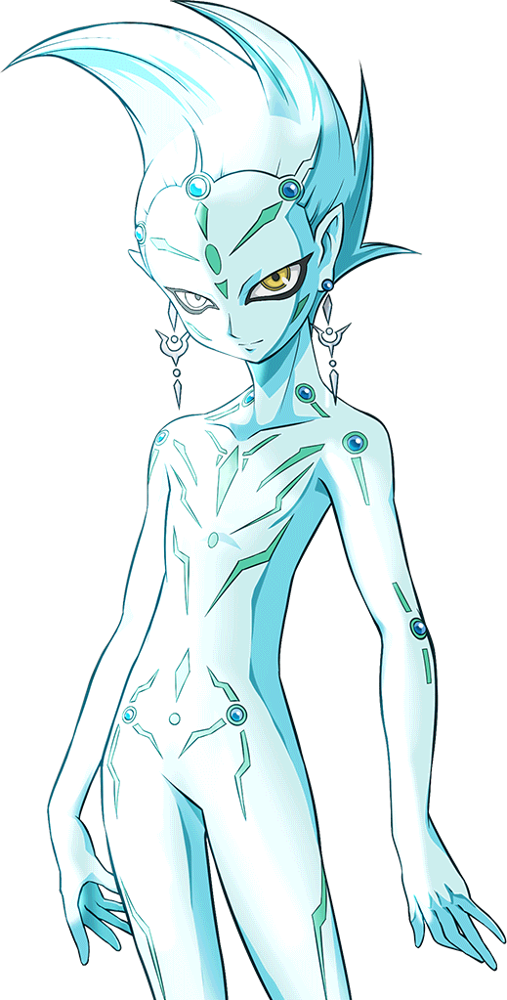 était heureux d'avoir cet avantage... à part le Pharaon Atem, bien sûr.
Astral: Nous devrions nous mettre en route. J'ai vu Dennis nous observer et il vient de se retirer.
Atem (Yami Yugi): Il doit être en route pour trouver Yuri. Edo a bien dit qu'il l'avait appelé pour qu'il vienne ici afin de chercher Yuzu.
Yugi lui fit remarquer.
Yuzu: Qui est en route ? Qu'est-ce que tu veux dire ?
Yuzu a demandé, Sora et elle semblait confus.
Judai: Oh oui, c'est vrai. Vous ne pouvez pas le voir. Eh bien, nous allons bientôt régler ce problème.
Disait Judai.
Sora: Qui est-ce qu'on ne peut pas voir ?
Yusei: Un autre de nos amis. Seuls nous quatre pouvons le voir, mais vous le rencontrerez bientôt. Pour l'instant, nous devons partir et...
Avant que Yusei ne puisse terminer ce qu'il disait, un développement imprévu venait de se produire qui alerta tout le monde.
Sans prévenir, le bracelet de Yuzu s'est mis à clignoter en rose. Cela a vraiment surpris Yuzu et Sora.
de Yuzu s'est mis à clignoter en rose. Cela a vraiment surpris Yuzu et Sora.
Sora: Qu'est-ce qui se passe avec ton bracelet ?
A demandé Sora. Yuzu, surprise, a secoué la tête, complètement déconcertée.
Yuzu: Je n'en sais rien. Il n'a jamais fait ça avant. Pourquoi fait-il ça ?
Elle a alors levé les yeux pour demander à Yugi s'il savait, mais son regard lui a dit que ce n'était pas une bonne chose. Ce n'était pas seulement lui. Judai, Yusei, Yuma, et même Astral (qu'elle ne pouvait pas voir) avaient l'air extrêmement alarmés.
Yuzu: Qu'est-ce qui ne va pas Yugi ?
Demanda Yuzu, qui semblait maintenant effrayée. Lui et ses amis se sont regardés et ont su instantanément ce que cela signifiait.
Atem (Yami Yugi): Yuzu, sais-tu si Yuya est toujours chez lui ?
Demanda Yugi avec insistance. Cette question les a stupéfiés, elle et Sora.
Yuzu: Yuya ? Qu'est-ce que Yuya a à voir avec mon bracelet ?
La question de Yugi l'a fait paniquer, plus qu'elle ne l'avait jamais fait dans sa vie.
Atem (Yami Yugi): J'ai bien peur que Yuya... soit en grand danger.